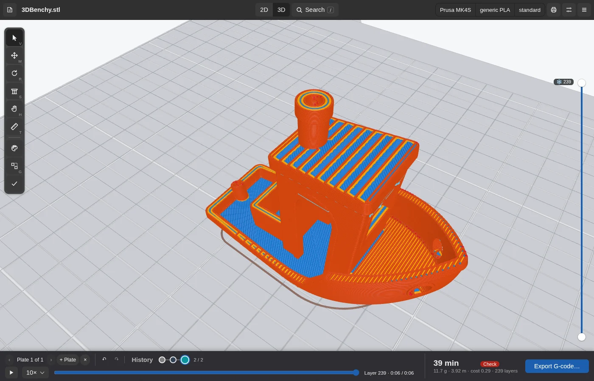
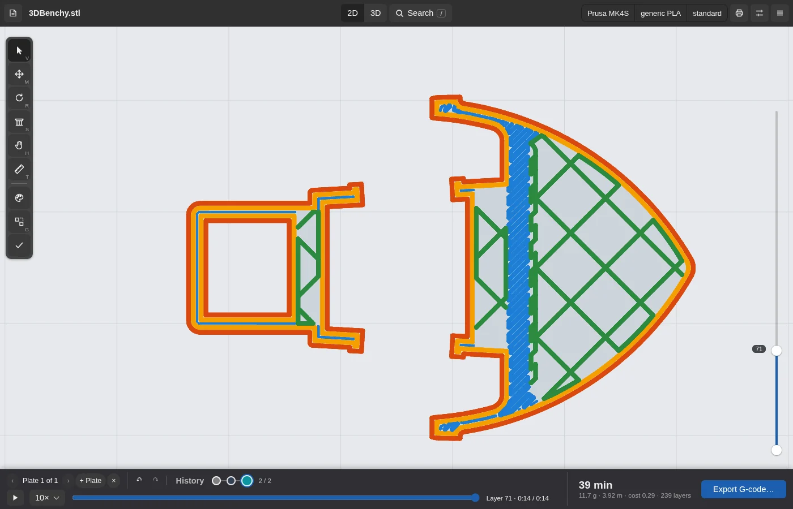

Everyday tasks
2Look at the print
Turn the view, go down through the layers, and replay the print as the printer prints it.

Move the view
| Mouse or touch | What it does |
|---|---|
| Left drag | Orbit around the part. The bed stays level. |
| Middle drag | Pan. On a touchpad: click down with two fingers and slide. |
| Wheel, light two-finger swipe, or pinch | Zoom toward the pointer. |
| One finger (touch screen) | Orbit. |
| Two fingers (touch screen) | Pinch to zoom. Move them to pan. |
| Double-click a side of a part | Turn the view to face that side. |
| Double-click elsewhere | Reset the view. |
2D or 3D

- 3D shows the print as beads. Skin lines are pressed flat. Connected lines look connected.
- 2D shows the top layer from above.
Press 2 to show the 2D view. Press 2 again, or 3, to go back to 3D. The main menu has the same switch: 2D view. In the 2D view, a sign at the top of the view says 2D view. Click the sign to go back to 3D.
Light or dark
zslice follows the light or dark mode of your system. In the web app, open the main menu and pick Theme to set Light or Dark. The browser keeps your choice. Pick Follow the system to go back.
The colors
The colors button in the tool strip colors the lines by Filament, Feature, Speed, Flow, Layer time, or Line width. With a number, a legend gives the range.
| Feature color | Lines |
|---|---|
| Orange | Outer wall |
| Yellow | Inner walls |
| Blue | Skin (top and bottom) |
| Green | Infill |
| Sky blue | Bridges |
| Gray | Support |
The last item of the colors menu is Show the plan, or Show the print as it forms. See The print as it forms.
The layers
- Drag the top knob of the layer slider: the print shows up to that layer.
- Drag the bottom knob: the layers below go away, so you see inside the part.
- Click in the view first. Then ↑ and ↓ (or K and J) move one layer. Page Up and Page Down move 10 layers.
- Orange marks on the slider show the layers with changes of their own.
Replay the print
- Press ▶ on the dock. The print grows line by line, and a nozzle shows where it prints.
- Pick the speed in the menu next to ▶: from 1× (the real speed) to 100×.
- Drag the scrub bar to move the nozzle through the top layer. The label gives the time in the layer.
With no line selected, ← and → move the nozzle back or on by 2 % of the layer.